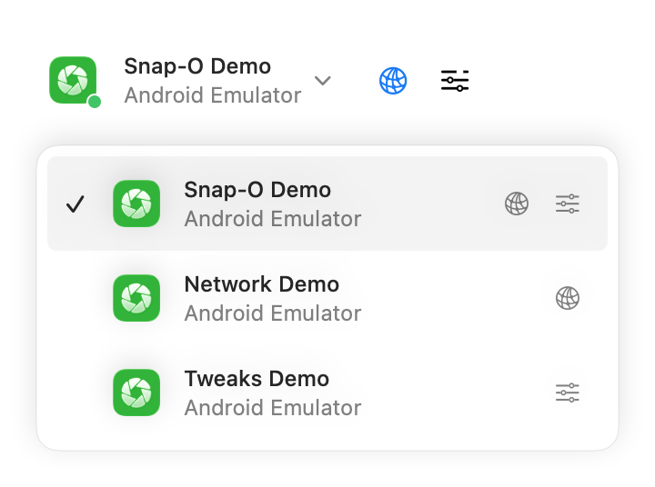

Screen capture
Option-drag Live Preview to share the current frame as a screenshot. Recordings open for playback and frame-by-frame inspection. You can use multiple devices and keep captures open in separate windows. Snap-O cleans up temporary capture files automatically.
Drag and drop
After you capture a screenshot or screen recording, you can drag and drop it without saving first. Drop the capture straight into a GitHub pull request, a Slack message, or any app that accepts images and video.
Keyboard shortcuts
| Action | Shortcut |
|---|---|
| New screenshot | ⌘R |
| Start recording | ⇧⌘R |
| Start live preview | ⇧⌘L |
| Stop recording / preview | ⎋ |
| Save as | ⌘S |
| Copy image to clipboard | ⌘C |
| Previous device | ⌘[ |
| Next device | ⌘] |
| Show / hide Tool pane | ⌥⌘I |
| Show / hide Capture | ⌥⌘C |
Tool pane
Apps bundle plugins that provide tools such as Network and Tweaks. Snap-O discovers these plugins and displays the selected tool’s frontend in the Tool pane.
The app picker shows one row per running app process. Click the row to keep your current tool type when available, or click a Network or Tweaks icon on the right to open that tool directly. You can also switch tools beside the selected app in the toolbar.

Native picker rendered with synthetic demo data.
Add the Android integration using the Network guide or Tweaks guide.
ADB setup
Snap-O communicates directly with the ADB server. If the server is not running, run adb start-server in Terminal. Snap-O reconnects automatically when the server becomes available.
For more live-preview and device-control features, see scrcpy.